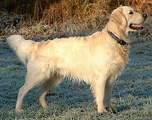

"The Golden Retriever is a Scottish breed of retriever dog of medium size. It is characteried by a gentle and affectionate nature and a striking golden coat. It is commonly kept as a pet and is among the most frequently registered breeds in several Western countries."
" It is a frequent competitor in dog shows and obedience trials; it is also used as a gundog, and may be trained for use as a guide dog." The breed was created by Sir Dudley Marjoribanks at his Scottish estate Guisachan in the late nineteenth century. He cross-bred Flat-coated Retrievers with Tweed Water Spaniels, with some further infusions of Red Setter, Labrador Retriever and Bloodhound.
